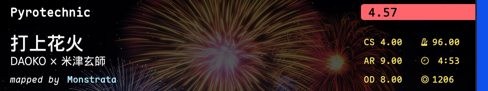
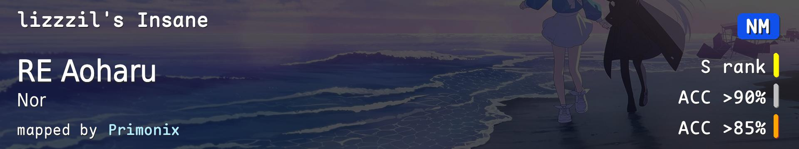
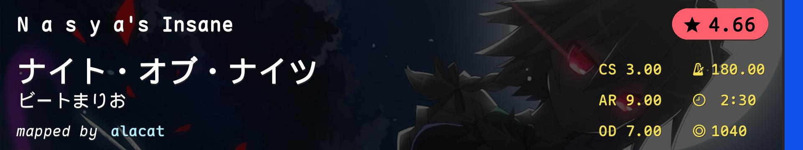
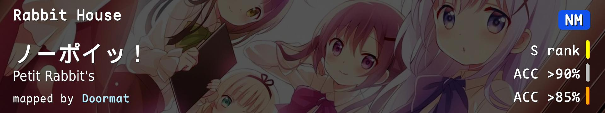

#
BID
Beatmap Info
Mods
Notes
1
1923824
NM
跳切
2
1898639
NM
综合
3
1387259

NM
稳定/耐力
4
4318953

NM
跳切
5
1321377
NM
跳切
6
3123254
NM
综合
7
785982

NM
爆发
8
992281
NM
高速爆发
9
861348

NM
综合
10
3804968
NM
综合